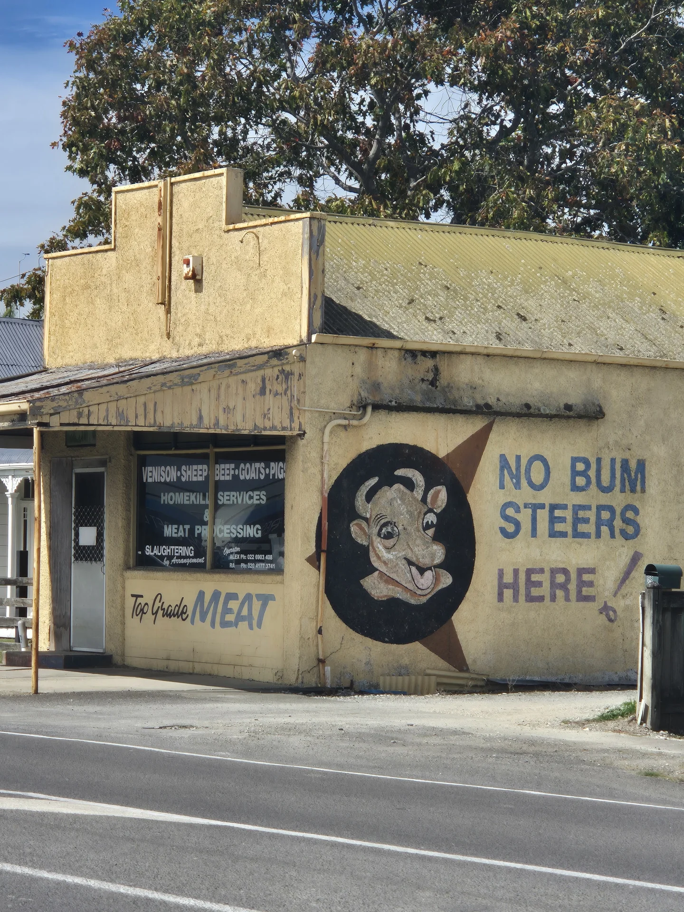
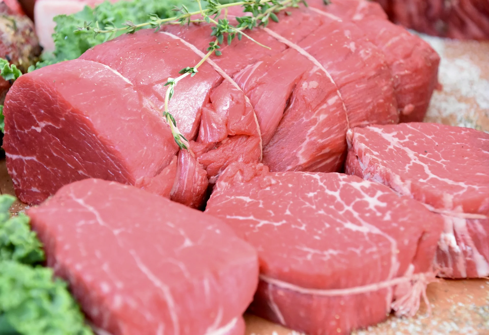
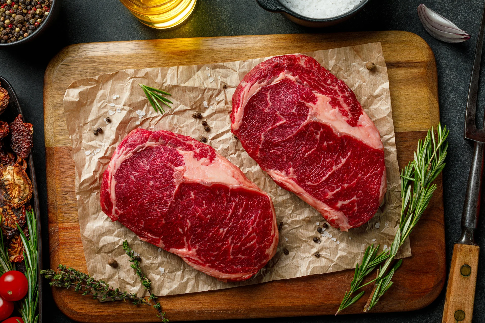
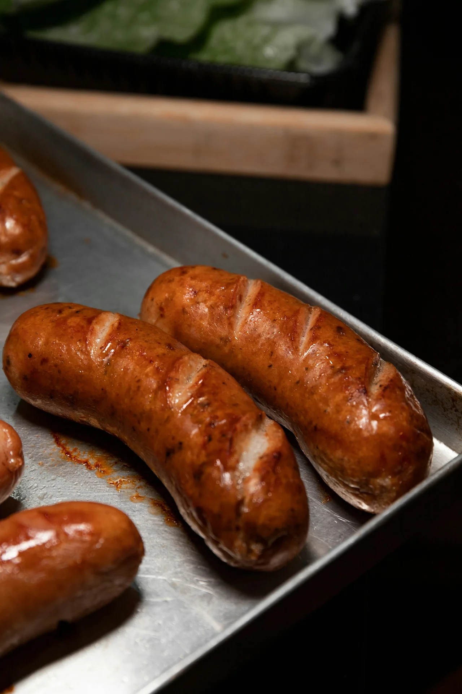
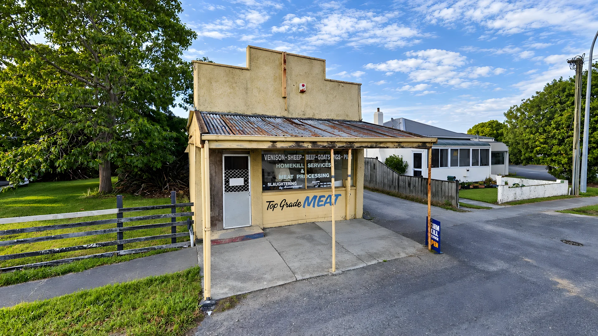
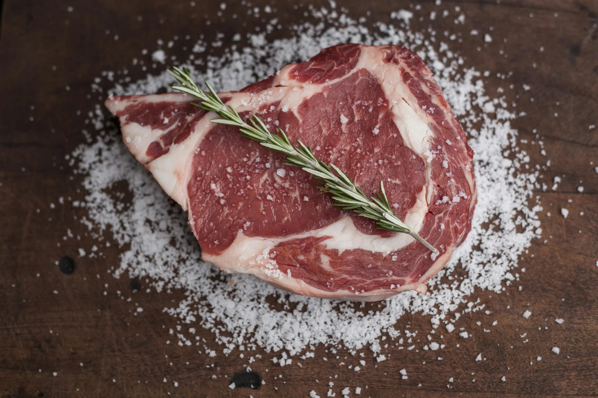

Homekill
Homekill services
Your own venison, sheep, beef, goats or pigs processed and cut ready for the freezer.
Homekill services and meat processing for venison, sheep, beef, goats and pigs, plus steaks, sausages and bones over the counter.
Bring us your own animal to process, or come in for meat over the counter.

Your own venison, sheep, beef, goats or pigs processed and cut ready for the freezer.

Carcasses broken down into roasts, steaks, chops and mince, and packed to suit your family.

Steaks and the other cuts over the counter.

Sausages customers call "yummy".
The ones that are hard to find anywhere else. Ring ahead to check what's in.
Slaughtering by arrangement. Give us a call to talk it through and book a time.
Photos marked "stock" are examples. The shop photos are Makaraka Butchery's own.


Makaraka Butchery is the mustard-coloured shop at 98 Main Road, Makaraka, with the cow on the wall and a promise painted beside it: no bum steers here.
Farmers and lifestyle-block owners bring in their venison, sheep, beef, goats and pigs for homekill processing, and locals call in for steaks, sausages and the meaty pork and bacon bones that are hard to find elsewhere.
Your butcher
Takes the calls, books in your homekill and talks you through how you'd like it cut and packed.
Word for word from Makaraka Butchery's Google profile.
"Friendly,clean place meaty porkbones and bacon bones its hard to find meaty pork and bacon bones. Sausages are yummy steaks has fat on it lol and of cause all other cuts of meat. Prices are reasonable. Thank you makaraka butchery.Top man!"
A quick Google review helps other Gisborne locals find the shop.
Venison, sheep, beef, goats and pigs. Call to book your animal in and talk through how you'd like it cut and packed.
Slaughtering is by arrangement. Give us a ring to talk about your animal, where it is and when suits.
Yes. Pop in for steaks, sausages, meaty pork and bacon bones and other cuts. Ring ahead if you're after something particular.
Monday to Friday, 7:30am to 4pm. We're closed on weekends.
98 Main Road, Makaraka, Gisborne 4010. Look for the mustard-coloured shop with the cow on the wall.
It depends on the animal and how you want it cut, so ring us for a price before you book it in.
Book your homekill, ask about processing, or check what's in the cabinet today.
The quickest way to book homekill is a phone call.
Call to book homekill Email the butchery